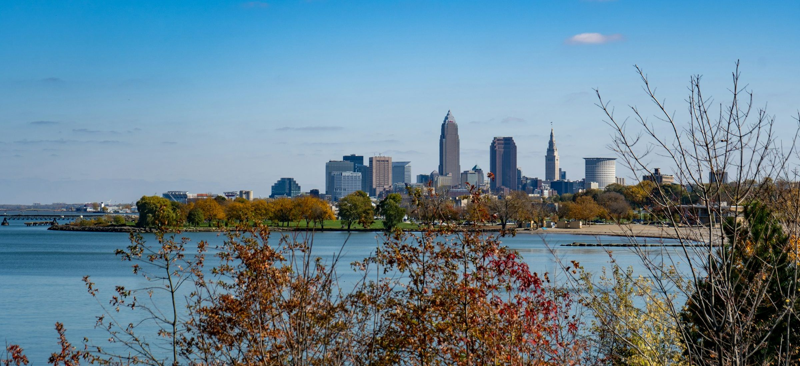

Relocating to Cleveland, Ohio
New to Northeast Ohio? Jen helps out-of-town buyers and families figure out which Cleveland suburb fits their life, then find the right home in it.
How do I choose the right Cleveland suburb?
Start with five questions: where you'll commute, what you need from schools, how close you want to be to Lake Erie, your budget, and the lifestyle you want day to day. Each Greater Cleveland suburb answers them differently, and Jen's job is to match yours to the right short list.
Most of Jen's clients are moving to Cleveland from out of town. They don't yet know a local agent, or the difference between Westlake and Lakewood. That's exactly where she helps.
Quick matcher
- Lakefront & beaches: Bay Village, Rocky River, Avon Lake, Lakewood
- Close to the airport: Westlake, North Olmsted, Fairview Park
- Walkable & close to downtown: Lakewood
- Newer construction: Avon
- Five-star school districts (2024–25): Bay Village, Rocky River, Avon
West side communities Jen knows best


West side Cleveland suburbs, side by side
| Suburb | County | Lake Erie shoreline | District rating Ohio Report Card 2024–25 | Known for |
|---|---|---|---|---|
| Bay Village | Cuyahoga | Yes | 5★ | Tree City USA; Huntington Beach & Metroparks; ~9–10 mi to CLE |
| Rocky River | Cuyahoga | Yes | 5★ | Rocky River Reservation (Cleveland Metroparks); lakefront at the river's mouth |
| Westlake | Cuyahoga | No (about 1 mile south of the lake) | 4.5★ | Crocker Park; I-90 & I-480 access; ~6 mi to CLE (city of Westlake) |
| Avon Lake | Lorain | Yes | 4.5★ | Lake Erie shoreline living just west of Bay Village; Veterans Park |
| Avon | Lorain | No | 5★ | Historic French Creek center; newer construction along the I-90 corridor |
| Lakewood | Cuyahoga | Yes | 4★ | Borders Cleveland; walkable Detroit & Madison avenues; Lakewood Park and the Solstice Steps |
| Fairview Park | Cuyahoga | No | 4.5★ | Borders the Rocky River Reservation; quick I-480 & I-90 access |
| North Olmsted | Cuyahoga | No | 3.5★ | Wide range of price points; Great Northern shopping; ~8 mi to CLE |
District ratings are overall star ratings from the 2024–25 Ohio School Report Cards (Ohio Department of Education & Workforce, as reported by Cleveland 19, Fox 8 and district websites). Distances from route planners and city sources. Always confirm current ratings, boundaries and drive times.
Considering the east side?
East-side suburbs such as Shaker Heights, Cleveland Heights, Beachwood, Solon and Chagrin Falls are also popular with newcomers. Jen can help you compare east versus west, and connect you with trusted east-side colleagues if that's where your search leads.
What does relocating with Jen look like?
- Discovery callYour timeline, budget, commute and must-haves.
- Suburb short listTwo or three suburbs that fit, with honest pros and cons.
- Get pre-approvedConnect with a local lender from Jen's network.
- Tour: in person or by videoNeighborhood drive-throughs and live video home tours.
- Offer, inspection & closingGuided step by step, with e-signatures wherever possible.
- Move in & settleMovers, utilities, schools, and a local guide for your first months.
Buying from out of town?
Can't get to Cleveland yet? Jen can tour homes for you by live video, send neighborhood walk-throughs, and coordinate inspections, appraisal and closing with your lender and title company, so you can act quickly when the right home appears.
Start my relocation planRelocating to Cleveland: FAQ
What are the best west side Cleveland suburbs for families?
It depends on what you value most. On the 2024–25 Ohio School Report Card, Bay Village, Rocky River and Avon districts earned five stars and Westlake, Avon Lake and Fairview Park earned 4.5 stars. Bay Village, Rocky River, Avon Lake and Lakewood also have Lake Erie shoreline.
Which Cleveland suburbs are close to the airport?
Westlake, North Olmsted and Fairview Park sit near I-480 and Cleveland Hopkins International Airport. Westlake reports the airport is about six miles away, North Olmsted is about eight miles by road, and Bay Village is roughly 9–10 miles.
Can I buy a home in Cleveland before I move?
Yes. Many relocating buyers tour by live video, review disclosures and inspections remotely, and coordinate with a lender and title company by phone and e-signature. Jen will explain which steps may still need an in-person or notarized signature for your situation.
Which suburb is closest to downtown Cleveland?
Lakewood borders the city of Cleveland on its west side, making it one of the closest suburbs to downtown, with walkable commercial streets and Lakewood Park on the lake. Rocky River and Fairview Park are next door.
Do I need a local realtor if I'm relocating to Cleveland, Ohio?
A local agent helps you avoid guessing about neighborhoods you've never seen. Jen lives in Bay Village and focuses on newcomers: she'll narrow the suburbs to your short list, preview homes for you and guide you from offer to closing.
Tell Jen about your move
Share a few details and Jen will follow up with a suburb short list and next steps. No obligation.
Prefer to talk? Call or text (330) 807-6374.